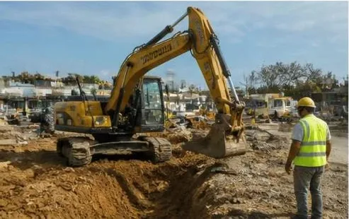

הקמת תחנות דלק
הקמת תחנות דלק שיפוץ ושדרוג תחנות
שיפוץ ושדרוג תחנות תחנות גז
תחנות גז עבודות צנרת דלק
עבודות צנרת דלק עבודות עפר ופיתוח
עבודות עפר ופיתוח תשתיות דלק לחוות שרתים
תשתיות דלק לחוות שרתים- ראשי
- תחומי פעילות
- עבודות עפר ופיתוח
עבודות עפר ופיתוח, עם ציוד משלנו
חפירה, מילוי והידוק, הכנת שטח, בורות מיכלים, ניקוז, ריצוף וקירות תומכים, בביצוע עם ציוד מכני הנדסי משלנו וצוותים קבועים.

הבור הוא הבסיס של התחנה
כל תחנה מתחילה בחור באדמה, ומה שנעשה בו קובע אם המיכלים יישבו נכון, אם הרחבה תחזיק ואם המים ינוקזו לאן שצריך. בור מיכלים חייב להיחפר למידות ולעומק מדויקים, עם מצע מתאים, יריעות איטום ועיגון, ובאתרים עם מי תהום גבוהים גם שאיבה במהלך העבודה.
אנחנו מבצעים את עבודות העפר בעצמנו, עם ציוד מכני הנדסי משלנו וצוותים קבועים, כך שהחפירה, המילוי, ההידוק והפיתוח מתואמים עם שאר העבודה ולא תלויים בקבלן משנה.
מהחפירה ועד הריצוף
- חפירה, מילוי והידוקחפירה מבוקרת, מילוי בשכבות והידוק לפי הדרישות.
- הכנת שטחפינוי, יישור והכנת מגרש לבנייה.
- בורות מיכליםחפירה מדויקת, מצע, יריעות איטום ועיגון המיכלים.
- ניקוז ותעלותתעלות ניקוז לתשטיפים, שיפועים ומפרידים.
- ריצוף ורחבותרחבות בטון, אבנים משתלבות והידוק.
- קירות תומכיםכמו הקיר באורך 64 מטר ובגובה 3 מטר בתחנת נובר באשדוד.
- פינוי קרקע מזוהמתחפירה, פינוי לאתר מורשה והנחת קרקע נקייה.
- ציוד מכני הנדסי משלנומחפרונים, מכבשים וציוד ייעודי, בלי תלות בקבלני משנה.
עבודות עפר בחמישה שלבים
- 01מדידה ותכנון
סימון, מדידת מפלסים ותכנון עומקים ושיפועים.
- 02חפירה
חפירה מבוקרת לבור המיכלים ולתעלות, כולל שאיבה במידת הצורך.
- 03מצע ואיטום
מצע מתאים, יריעות איטום ועיגון למיכלים.
- 04מילוי והידוק
מילוי בשכבות והידוק, בדיקות לפי הדרישות.
- 05פיתוח וריצוף
ניקוז, קירות, רחבות בטון וריצוף עד למסירה.
נובר אשדוד: קיר תומך באורך 64 מטר
במסגרת ההקמה מחדש של תחנת נובר באשדוד, התחנה הורחבה עם תשתיות למכונות שטיפת רכבים ואפשרות כניסה למשאיות, כולל בניית קיר תומך באורך 64 מטר ובגובה 3 מטר. בתחנת חצי חינם בחולון הוטמן מיכל דלק בעומק של ארבעה מטר, כולל יריעת איטום ועיגון המיכל, ונבנו תעלות ניקוז לתשטיפים.
בשיפוץ תחנת דור אלון באילות בוצעה חפירה לעומק של כשני מטר, פינוי קרקע מזוהמת לאתר מורשה והנחת קרקע נקייה. לכל הפרויקטים
עפר ופיתוח מהשטח
שאלות על עבודות עפר
האם אתם מבצעים עבודות עפר גם שלא כחלק מהקמת תחנה?
כן. עבודות עפר, פיתוח, ניקוז וריצוף הן תחום עצמאי אצלנו, לתחנות דלק וגז, לחוות שרתים ולאתרי תשתית.
מה קורה כשיש מי תהום גבוהים?
בור המיכלים נחפר עם שאיבה במהלך העבודה, והמיכלים מעוגנים למניעת ציפה. זה נקבע בתכנון, לפי סקר הקרקע.
מי מספק את הציוד?
אנחנו. יש לנו ציוד מכני הנדסי משלנו וצוותים קבועים, ולכן לוח הזמנים לא תלוי בזמינות של קבלני משנה.
צריכים עבודות עפר? נגיע למדוד
השאירו פרטים ונחזור אליכם לשיחה קצרה. לפי הצורך נגיע לאתר למדידה לפני הצעת המחיר. או ישירות לעוזי: 050-270-3674